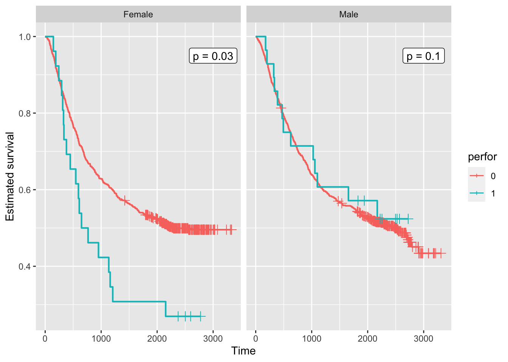

library('tidyverse')── Attaching core tidyverse packages ──────────────────────── tidyverse 2.0.0 ──
✔ dplyr 1.1.2 ✔ readr 2.1.4
✔ forcats 1.0.0 ✔ stringr 1.5.0
✔ ggplot2 3.4.2 ✔ tibble 3.2.1
✔ lubridate 1.9.2 ✔ tidyr 1.3.0
✔ purrr 1.0.1
── Conflicts ────────────────────────────────────────── tidyverse_conflicts() ──
✖ dplyr::filter() masks stats::filter()
✖ dplyr::lag() masks stats::lag()
ℹ Use the conflicted package (<http://conflicted.r-lib.org/>) to force all conflicts to become errorslibrary('survival')
library('ggquickeda')
Attaching package: 'ggquickeda'
The following object is masked from 'package:base':
+text_to_add <-
tribble(~ sex, ~ text, ~ x, ~ y,
'Male', 'p = 0.1', 3000, 0.95,
'Female', 'p = 0.03', 3000, 0.95)
colon |>
mutate(sex = case_when(
sex == 1 ~ 'Male',
sex == 0 ~ 'Female')) |>
mutate(perfor = factor(perfor)) |>
ggplot(aes(time = time, status = status, colour = perfor)) +
facet_wrap(vars(sex)) +
geom_km() + geom_kmticks() +
geom_label(mapping = aes(label = text,
x = x,
y = y),
data = text_to_add,
inherit.aes = FALSE) +
labs(x = 'Time', y = 'Estimated survival')Warning: The following aesthetics were dropped during statistical transformation: status
ℹ This can happen when ggplot fails to infer the correct grouping structure in
the data.
ℹ Did you forget to specify a `group` aesthetic or to convert a numerical
variable into a factor?
The following aesthetics were dropped during statistical transformation: status
ℹ This can happen when ggplot fails to infer the correct grouping structure in
the data.
ℹ Did you forget to specify a `group` aesthetic or to convert a numerical
variable into a factor?
The following aesthetics were dropped during statistical transformation: status
ℹ This can happen when ggplot fails to infer the correct grouping structure in
the data.
ℹ Did you forget to specify a `group` aesthetic or to convert a numerical
variable into a factor?
The following aesthetics were dropped during statistical transformation: status
ℹ This can happen when ggplot fails to infer the correct grouping structure in
the data.
ℹ Did you forget to specify a `group` aesthetic or to convert a numerical
variable into a factor?Warning: Using the `size` aesthetic with geom_path was deprecated in ggplot2 3.4.0.
ℹ Please use the `linewidth` aesthetic instead.